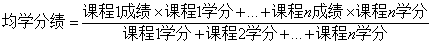

第三十一条 平均学分绩由学生本学年各科期末考试得分及各科学分按以下公式计算得出：

其中，公共任选课、重修课成绩不参与平均学分绩计算。凡是通过国家英语四级考试的，当年校内英语成绩按100分计算；通过国家英语六级考试的，当年和以后校内英语成绩按100分计算（仅限于奖学金评定）。
经学校批准攻读第二学位、辅修专业或课程模块的学生，均学分绩另加∑0.1分×合格课程学分（第二学位、辅修专业或课程模块）。
第三十二条 国设奖学金的评选、表彰由政府相关部门组织实施。学校按照要求开展相关奖项候选人的初审和推荐工作。
第三十三条 社会奖学金的表彰奖励形式由学校（二级学院）与设奖单位及个人协商决定。社会奖学金的评选结果和获奖学生的材料反馈设奖或资助单位（个人）。
第三十四条 各学院在本办法基础上，广泛听取任课教师、学生代表的意见建议，结合本学院专业特点制定实施细则，并报学生工作部备案。
第三十五条 学校（二级学院）严格执行国家相关财经法规和本办法的规定，对学生奖学金实行分账核算，专款专用，不得截留、挤占、挪用，同时接受财政、审计、纪检监察、主管机关等的检查和监督。
第三十六条 来华留学生不适用本办法。
第三十七条 本办法及各学院配套制定的实施细则从2018年9月1日起执行，原《中原工学院学生奖学金评比办法》同时废止。其他有关文件规定与本规定不一致的，以本规定为准。
第三十八条 本办法由学生工作处负责解释。